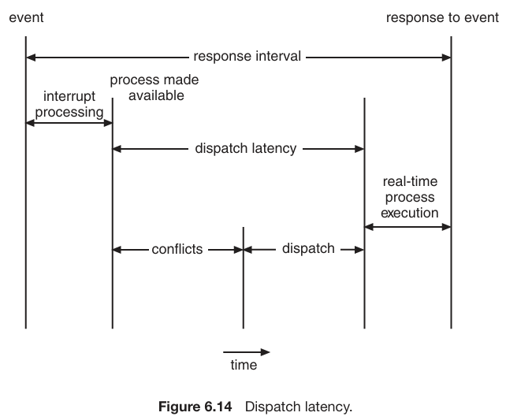

Hey everyone! This article is about how CPU schedules the processes and executes them, covering various scheduling algorithms. It consists of my notes which I prepared while studying this topic from operating systems textbook by Silberschatz and Galvin. So let’s start:
CPU-I/O burst cycle
- process execution consists of a cycle of
CPU executionandI/O wait. - process alternate between these two states.
- process execution begins with
CPU burstand followed byI/O burst, and cycle continues. - An I/O-bound program typically has many short CPU bursts. A CPU-bound program might have a few long CPU bursts
CPU Scheduling
- Whenever the CPU becomes idle, the OS must select one of the process in the ready queue which is to be allocated to the CPU by CPU scheduler.
Scheduler: Its job is to decide which processes should be allowed to use the CPU and for how long, and schedules into the ready queue and later dispatched for execution by thedispatcher.
Preemptive Scheduling
Pre-emptive : A running process or thread can be interrupted and moved out of the CPU to allow another process or thread to execute- There are four circumstances where decision is to be taken for CPU rescheduling, when:
- Running State to waiting State
- Waiting State to Ready State
- Running State to Ready State
- Process terminates
-
Scheduling Scheme for 1 and 4 is
non preemptive. Unfortunately, preemptive scheduling can result inrace conditionswhen data are shared among several processes. - Preemption also affects the design of the operating-system kernel.
Dispatcher
-
The dispatcher is the module that gives control of the CPU to the process selected by the short-term scheduler
-
Dispatch Latency: The time between stopping a process and starting another process. -
Dispatcher should be fast as much as possible.
-
Its functions are :
- Context Switching
- Switching to user mode
- Jumping from one location in the program to restart it. [The dispatcher needs to set the program counter (PC) to the appropriate location in the user program, allowing the selected process to resume its execution from where it was previously interrupted]
{kind=link}
Scheduling Criteria
Throughput: number of processes per unit timeTurnaround: total time from waiting to completionResponse Time: time from submission of the request till first responseWaiting Time: the sum of the periods spent waiting in the ready queue
Scheduling Algorithms
First Come, First Served Scheduling (FCFS)
-
With this scheme, the process that requests the CPU first is allocated the CPU first. The implementation of the FCFS policy is easily managed with a
FIFO queue. When a process enters the ready queue, its PCB is linked onto the tail of the queue. When the CPU is free, it is allocated to the process at the head of the queue. The running process is then removed from the queue. -
The average waiting time under an FCFS policy is generally not minimal and may vary substantially if the processes’ CPU burst times vary greatly.
-
Convoy Effect: The effect due to which short processes are delayed by longer processes ahead of them in the queue.
Shortest Job-First Scheduling
- In this scheduling algo, CPU is assigned to the process that has the smallest next CPU burst. If the next CPU bursts of two processes are the same, FCFS scheduling is used to break the tie.
- The real difficulty with the
SJF algorithmis knowing the length of the next CPU request. For long-term (job) scheduling in a batch system, we can use the process time limit that a user specifies when he submits the job. In this situation, users are motivated to estimate the process time limit accurately, since a lower value may mean faster response but too low a value will cause a time-limit-exceeded error and require resubmission. SJF scheduling is used frequently in long-term scheduling. - To predict next CPU-cycle burst, we can use
exponential averageformula. τ(n+1) = α. Tn + (1-α) . τ(n)- The SJF algorithm can be either
preemptiveornonpreemptive Preemptive SJFscheduling is sometimes calledshortest-remaining-time-first scheduling.
Priority Algorithm
- The SJF algorithm is a special case of the general
priority-schedulingalgorithm. - An SJF algorithm is simply a priority algorithm where the priority (p) is theinverse of the (predicted) next CPU burst. The larger the CPU burst, the lower the priority, and vice versa.
- Priority scheduling can be either
preemptive or nonpreemptive. - Problem with priority scheduling algorithms is
indefinite blocking, or starvation. A process that is ready to run but waiting for the CPU can be considered blocked. A priority scheduling algorithm can leave some low priority processes waiting indefinitely. - Solution to this problem is
aging. That means, priority is increased by 1 in very 15 minutes.
Round-Robin Algorithm
- This algo is
preemptive - A small unit of time, called a
time quantumortime slice, is defined. A time quantum is generally from 10 to 100 milliseconds in length. - In the RR scheduling algorithm, no process is allocated the CPU for more than 1 time quantum in a row.
Multilevel Queue Scheduling
- Five queues, listed below in order of priority:
- System processes
- Interactive processes
- Interactive editing processes
- Batch processes
- Student processes
- The foreground queue might be scheduled by an
RR algorithm, while the background queue is scheduled by anFCFS algorithm.
{kind=link}
Multilevel Feedback Queue Scheduling
- It allows processes to move between queues which makes it flexible, whereas previous algo was not flexible.
- If a process uses too much CPU time, it will be moved to a lower-priority queue.
- In general, a multilevel feedback queue scheduler is defined by the following parameters:
- The number of queues
- The scheduling algorithm for each queue
- The method used to determine when to upgrade a process to a higher priority queue
- The method used to determine when to demote a process to a lower priority queue
- The method used to determine which queue a process will enter when that process needs service
Thread Scheduling
Contention Scope
process contention scope: in this scheme, thread library schedules user-level threads to run on available LWP.system contention scope: In this scheme, kernel level threads are scheduled to be run on the CPU.
POSIX Scheduling
- uses
pthreads pthread_scope_system&pthread_scope_process- pthread IPC provides two functions for setting and getting the contention scope policy:
pthread attr setscope(pthread attr t *attr, int scope)pthread attr getscope(pthread attr t *attr, int *scope)
Multiprocessor Scheduling
Assymmetric multiprocessing: Involves amaster processorthat has all scheduling descisions, I/O processing and other accesses, while other processors runs the user code only. It issimpleSymmetric multiprocessing: It is bit complex. Each processor is self-scheduling
Processor Affinity
processor affinityis about keeping certain tasks or processes consistently assigned to specific processors, aiming to improve efficiency and overall system performance.- related to cache memory which makes processes faster to execute on CPU.
Soft Affinity: In soft affinity, a process or thread is recommended to run on a specific processor or a set of processors, but it is not strictly enforced.Hard Affinity: In hard affinity, a process or thread is strictly bound to execute on a specific processor or a set of processors.
sched setaffinity()system call : can set hard affinity
Load Balancing
- It attempts to keep the workload evenly distributed across all processors in an SMP system.
- Two general approaches to load balancing :
Push Migration: If found imbalance on one processor, it migrated some load on other processors.Pull Migration: When an idle processor pulls some load from a busy processor.
Memory Stall
- A
memory stallrefers to a situation in a computer system where the CPU (Central Processing Unit) has to wait for data to be fetched from the memory before it can proceed with its execution. Memory stalls can occur due to various reasons, and they often result in a temporary delay in the execution of instructions.Cache Miss: A cache miss occurs when the CPU needs data that is not in the cache.Memory Latency: accessing data from main memory can introduce latency.Data Dependencies: the execution of instructions is dependent on the availability of data.Memory Bus Saturation: is responsible for transferring data between the CPU and RAM, is saturated or experiencing high traffic, it can lead to delays in data transfer, resulting in memory stalls.
- Two multithreading approaches:
Coarse-grained: Cost of thread switching is high here. Instruction pipeline must be flused out before switching to othere thread on a processor.Fine-grained: Cost of thread switching is low.
Real Time CPU Scheduling
-
Hard and Soft Real-Time Systems:
Hard real-timesystems have strict and non-negotiable timing requirements. Missing deadline in a hard real-time system is considered a system failure.Soft real-timesystem have timing constraints that are important but not critical; missing a deadline may no lead to catastrophic failure. - Two types of latencies affect the performance of real-time systems:
- Interrupt Latency
- Dispatch Latency
Interrupt Latency: from the arrival of an interrupt at the CPU to the start of the routine that services the interrupt. First, OS completes the instruction which it was running, then, it determines the type of interrupt and then it saves the state before servicing the interrupt.ISR: Interrupt Service Routine, a software routine, executed in response to the interrupt signal generated by hardware or software.Dispatch Latency: from the arrival of an interrupt at the CPU to the start of the routine that services the interrupt.- It uses preemptive kernels. 
{kind=link}
Priority Based Scheduling
admission-approval: In this scheduler either admits the process, guaranteeing that the process will complete on time, or rejects the request as impossible if it cannot guarantee that the task will be serviced by its deadline.
Rate-Monotic scheduling
- uses static priority policy with preemption.
- Uponentering the system, each periodic task is assigned a priority inversely based on its period.
- rate-monotonic scheduling assumes that the processing time of a periodic process is the same for each CPU burst. That is, every time a process acquires the CPU, the duration of its CPU burst is the same.
- This method may or may not guarantee that the processes will meet their deadlines.
- It tries to schedule the processes in such a way that a process meets its deadline.
- Shorter the period, higher the priority.
Earliest Deadline First Scheduling
- This scheduling method assigns priorities based on the deadlines.
Shorter the deadline, higher the priority.- Unlike the rate-monotonic algorithm, EDF scheduling does not require that processes be periodic, nor must a process require a constant amount of CPU time per burst.
- The only requirement is that a process announce its deadline to the scheduler when it becomes runnable
- Achieving 100% cpu utilisation is impossible, because of the cost of context switching and interrupt handling.
Proportional Share Scheduling
- In this type, processes are allocated N shares of total T shares of time.
- Its schedulers work in conjunction with
admission-policy.
Finally, it’s time to wrap up. Thank you for your attention. Hope you like this blog.